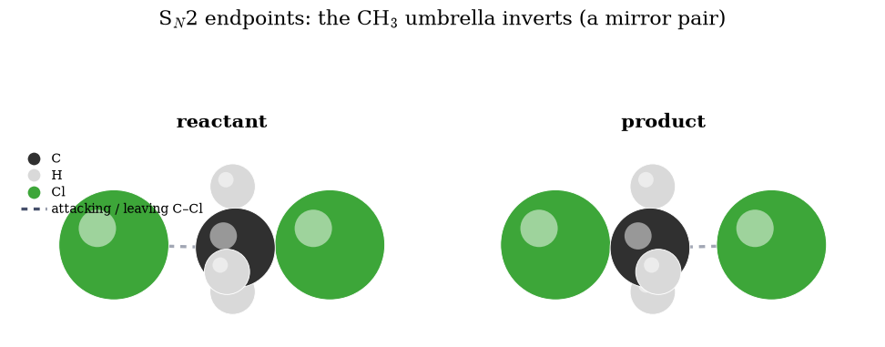
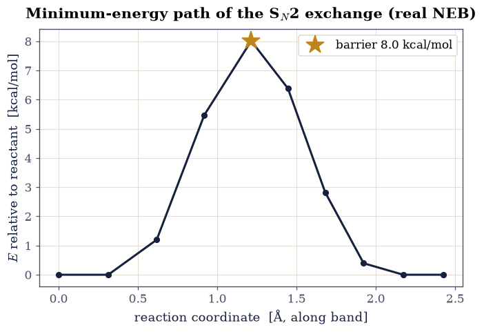
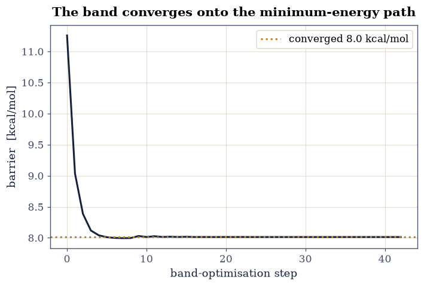

6.2 The S\(_N\)2 Reaction by Nudged Elastic Band#
Notebook overview#
The textbook Sₙ2 reaction: a chloride ion attacks chloromethane from behind, the three hydrogens flip through like an umbrella in the wind, and a chloride leaves from the front, \(\mathrm{Cl^- + CH_3Cl \to ClCH_3 + Cl^-}\). Knowing the reactant and product is not enough; we want the path between them and the barrier at its crest. The nudged elastic band (NEB) finds both: it strings a chain of replicas of the system between the two endpoints, connects them with springs, and relaxes the chain onto the minimum-energy path.
We take the course’s NEB calculation in CP2K and its committed output: the optimised reactant and product geometries, and the energy of every image at every iteration of the band optimisation. We render the two endpoints, whose bonded and departing chlorines exchange roles, read the converged band to plot the energy profile and extract the activation barrier, and watch the band converge onto the minimum-energy path over the optimisation.
Provenance. This notebook develops Lecture 13 of the course (nudged elastic band and free-energy calculations), an exercise designed by the author (Raymond Amador). The endpoint structures (
sn2-reactant.xyz,sn2-product.xyz) and the band energies (sn2-neb.ener) are the course’s own committed CP2K results. The full course credit is in the footer.
Reading a validation. Each task closes with a check against an independent fact: a symmetric reaction must give a symmetric path, the transition state sits at the top, the band must converge. A ✗ flags a mismatch; a ✓ is strong evidence, not proof.
Scope. Energies are the committed CP2K totals (Hartree, converted to kcal/mol); we analyse the band rather than rerun it. For the method see the nudged elastic band [HUJonsson00].
Theory in brief#
The minimum-energy path#
A reaction follows the minimum-energy path on the potential surface: the lowest ridge crossing from the reactant valley to the product valley. Its highest point is the transition state, and the energy there above the reactant is the activation barrier Eq. 36,
Nudged elastic band#
The NEB discretises the path into a chain of images, copies of the system interpolated between the fixed endpoints. Adjacent images are joined by springs to keep them spread out, and each image is relaxed using only the force component perpendicular to the path (from the true potential) plus the spring force along the path. This “nudging” stops the images sliding into the endpoints or cutting the corner, so the converged chain traces the minimum-energy path, and its peak is the barrier. For the symmetric Sₙ2 exchange the path must be symmetric, with the transition state, the trigonal-bipyramidal \(\mathrm{[Cl\cdots CH_3\cdots Cl]^-}\), at its midpoint.
Setup#
import os
import numpy as np
import matplotlib.pyplot as plt
import matplotlib.colors as mcolors
from matplotlib.patches import Circle
from matplotlib.lines import Line2D
from ecp import validate
INK, AMBER, SOFT = "#16213e", "#c0851a", "#46506b"
HARTREE_KCAL = 627.503
CPK = {"H": "#d9d9d9", "C": "#303030", "Cl": "#3da639"}
RADIUS = {"H": 0.31, "C": 0.76, "Cl": 1.02}
def data_file(name):
"""Locate a shipped data file, from the repo root (CI) or the notebook dir (Colab).
Parameters
----------
name : str
File name (or relative path) under a ``data`` directory.
Returns
-------
str
The first existing path found.
Raises
------
FileNotFoundError
If the file is not found under any candidate base.
"""
for base in ("data", os.path.join("notebooks", "06-reactions-free-energy", "data")):
path = os.path.join(base, name)
if os.path.exists(path):
return path
raise FileNotFoundError(name)
def read_xyz(name):
"""Read an .xyz file.
Parameters
----------
name : str
File name (coordinates in Å).
Returns
-------
tuple
``(elements, coords)``: a list of element symbols and an (N, 3)
coordinate array in Å.
"""
lines = open(data_file(name)).read().splitlines()
n = int(lines[0].split()[0])
els = [ln.split()[0] for ln in lines[2:2 + n]]
xyz = np.array([[float(v) for v in ln.split()[1:4]] for ln in lines[2:2 + n]])
return els, xyz
DISPLAY_R = {"H": 0.42, "C": 0.74, "Cl": 1.02} # drawing radii (Å)
def _lighten(color, f):
"""Blend an RGB colour a fraction ``f`` of the way toward white."""
r, g, b = mcolors.to_rgb(color)
return (r + (1 - r) * f, g + (1 - g) * f, b + (1 - b) * f)
def sn2_frame(els, xyz):
"""Orthonormal viewing frame aligned to the Cl···C···Cl axis.
Parameters
----------
els : list of str
Element symbols.
xyz : numpy.ndarray
Coordinates, shape (N, 3), in Å.
Returns
-------
tuple
``(C, R)``: the carbon position and a (3, 3) matrix whose rows are the
horizontal (Cl–Cl axis), vertical, and depth directions. Applying the
*same* frame to the reflected product makes the umbrella inversion read
as a left–right flip between the two panels.
"""
C = xyz[els.index("C")]
cls = [i for i, e in enumerate(els) if e == "Cl"]
u = xyz[cls[1]] - xyz[cls[0]]
u = u / np.linalg.norm(u)
h0 = xyz[[i for i, e in enumerate(els) if e == "H"][0]] - C
w = h0 - (h0 @ u) * u
w = w / np.linalg.norm(w)
return C, np.vstack([u, w, np.cross(u, w)])
def draw_sn2(ax, els, xyz, C, R):
"""Orthographic ball-and-stick view of an Sₙ2 endpoint in a shared frame.
Parameters
----------
ax : matplotlib.axes.Axes
Target axes.
els : list of str
Element symbols.
xyz : numpy.ndarray
Coordinates, shape (N, 3), in Å.
C : numpy.ndarray
Carbon position (projection origin).
R : numpy.ndarray
(3, 3) frame from :func:`sn2_frame`.
Notes
-----
The bonded C–Cl (short) is drawn solid, the attacking/leaving C–Cl (long)
dashed, so the exchange of partners is visible at a glance.
"""
P = (xyz - C) @ R.T # [Cl-axis, up, depth]
for i in range(len(els)):
for j in range(i + 1, len(els)):
d = np.linalg.norm(xyz[i] - xyz[j])
if {els[i], els[j]} == {"C", "Cl"}:
solid = d < 2.0
ax.plot([P[i, 0], P[j, 0]], [P[i, 1], P[j, 1]], color=SOFT, lw=2.2,
ls="-" if solid else (0, (2, 2)), alpha=0.85 if solid else 0.5,
zorder=1)
elif d < 1.3 * (RADIUS.get(els[i], 0.7) + RADIUS.get(els[j], 0.7)):
ax.plot([P[i, 0], P[j, 0]], [P[i, 1], P[j, 1]], color=SOFT, lw=2.2, zorder=1)
for k in np.argsort(P[:, 2]):
c, r = CPK.get(els[k], "#888"), DISPLAY_R.get(els[k], 0.5)
z = 2.0 + P[k, 2]
ax.add_patch(Circle((P[k, 0], P[k, 1]), r, facecolor=c,
edgecolor="white", lw=0.6, zorder=z))
ax.add_patch(Circle((P[k, 0] - 0.3 * r, P[k, 1] + 0.3 * r), 0.34 * r,
facecolor=_lighten(c, 0.5), edgecolor="none", zorder=z + 0.01))
ax.set_aspect("equal")
ax.margins(0.15)
ax.set_xticks([])
ax.set_yticks([])
for s in ax.spines.values():
s.set_visible(False)
Exercise 1 — The reactant and product#
The two endpoints are mirror images: the same molecule with its two chlorines interchanged. In the reactant the carbon is bonded to one chlorine with the other chloride loosely approaching from behind; in the product the bonding has swapped. The hallmark of the Sₙ2 mechanism is that the three hydrogens invert as the reaction passes through a planar \(\mathrm{CH_3}\) transition state, like an umbrella turning inside out — so the product’s pyramid opens the opposite way from the reactant’s, and the product geometry is the reactant reflected through that planar midpoint.
Part a) Render the reactant and product. Part b) Confirm the C–Cl bonding swaps between the two (the chlorine that is bonded becomes the one that leaves).

Fig. 46 The committed Sₙ2 endpoints: chloromethane with an attacking chloride (reactant) and the product after exchange (carbon grey, hydrogen white, chlorine green). The reaction swaps which chlorine is bonded to carbon; along the path between them, the three hydrogens invert through a planar transition state.#
reactant C–Cl distances: 1.76, 2.26 Å; product: 1.76, 2.26 Å
Validation 1 — a short and a long C–Cl bond at each end#
Each endpoint has one bonded chlorine (1.5–1.8 Å) and one departing/attacking chlorine farther out (~2.3 Å): the asymmetry that the reaction reverses.
✓ each endpoint has one bonded and one distant chlorine [reactant 1.76/2.26 Å, product 1.76/2.26 Å]
True
Exercise 2 — The minimum-energy path and the barrier#
The band optimisation writes the energy of every image at every step to a .ener
file; its last line is the converged path. We read the ten image energies, measure
each relative to the endpoints, and plot the profile against the reaction coordinate
(the cumulative distance along the band). The result is a single symmetric barrier;
its height is the activation energy of the exchange.
Part a) Read the converged band and plot the energy profile. Part b) Extract the activation barrier and confirm the path is symmetric.

Fig. 47 Minimum-energy path of the chloride-exchange Sₙ2 reaction from the converged nudged-elastic-band calculation: image energy (kcal/mol, relative to the endpoints) against the reaction coordinate. The path is thermoneutral (equal endpoints) and approximately symmetric, and its single peak, the trigonal-bipyramidal transition state, sits ~8 kcal/mol above the reactant: the gas-phase central barrier of the exchange.#
activation barrier = 8.01 kcal/mol; transition state at image 4 of 9
Validation 2 — a central barrier on a thermoneutral path#
The chloride exchange is thermoneutral (reactant and product are the same molecule with its two identical chlorines swapped), so the endpoints must come out at equal energy, with a positive barrier of the right size (several kcal/mol) peaked near the middle of the band. The path is only approximately symmetric: the discrete images cluster unevenly around the transition state.
✓ the path is thermoneutral with a central barrier of the right size [barrier 8.0 kcal/mol at image 4; endpoint energy difference 0.000 kcal/mol]
True
Exercise 3 — Convergence of the band#
The band does not start on the minimum-energy path; it relaxes onto it. Each row of
the .ener file is one optimisation step, so plotting the barrier (the highest image,
relative to the endpoints) against step shows the band settling. It starts from the
straight-line interpolation between the endpoints, whose strained geometries
overestimate the barrier, and relaxes downward as the chain finds the true ridge,
converging after a few tens of iterations.
Part a) Compute the barrier at every optimisation step. Part b) Confirm it has converged by the final steps.

Fig. 48 Convergence of the nudged-elastic-band barrier: the activation energy (highest image relative to the endpoints) versus band-optimisation step. The initial straight-line interpolation overestimates the barrier through its strained geometries; as the chain relaxes onto the minimum-energy path the barrier falls and levels off, converged to ~8 kcal/mol after a few tens of iterations.#
Validation 3 — the band has converged#
By the final iterations the barrier must have stopped changing: the last few steps should agree to a small fraction of a kcal/mol.
✓ the NEB barrier has converged over the last few steps [change over the final 5 steps = 0.000 kcal/mol (converged at 8.01)]
True
Notebook summary#
We traced the minimum-energy path of the symmetric S\(_N\)2 chloride exchange with the nudged elastic band, reading the course’s committed band energies. The converged path is a single barrier on a thermoneutral profile, with the trigonal-bipyramidal transition state about \(8\,\)kcal/mol above the reactant, and following the barrier over the band optimisation showed it relaxing downward from the strained straight-line interpolation onto the true ridge. The endpoints fix the chemistry; the band finds the route between them.
Outlook#
The climbing image. A climbing-image NEB drives the highest replica exactly to the saddle point, giving the barrier without interpolating between images.
Free energy, not energy. The course continued to a free-energy surface from metadynamics (next notebook); the energetic barrier here is its zero-temperature limit.
Solvent. The gas-phase Sₙ2 has a double-well shape with a small central barrier; in water the ion-dipole wells largely vanish and the barrier rises sharply, the classic solvent effect on Sₙ2 kinetics.
Endpoint quality. A NEB is only as good as its endpoints; both must be true minima, which is why the exercise optimised them first.
References#
Graeme Henkelman, Blas P. Uberuaga, and Hannes Jónsson. A climbing image nudged elastic band method for finding saddle points and minimum energy paths. The Journal of Chemical Physics, 113(22):9901–9904, 2000. doi:10.1063/1.1329672.